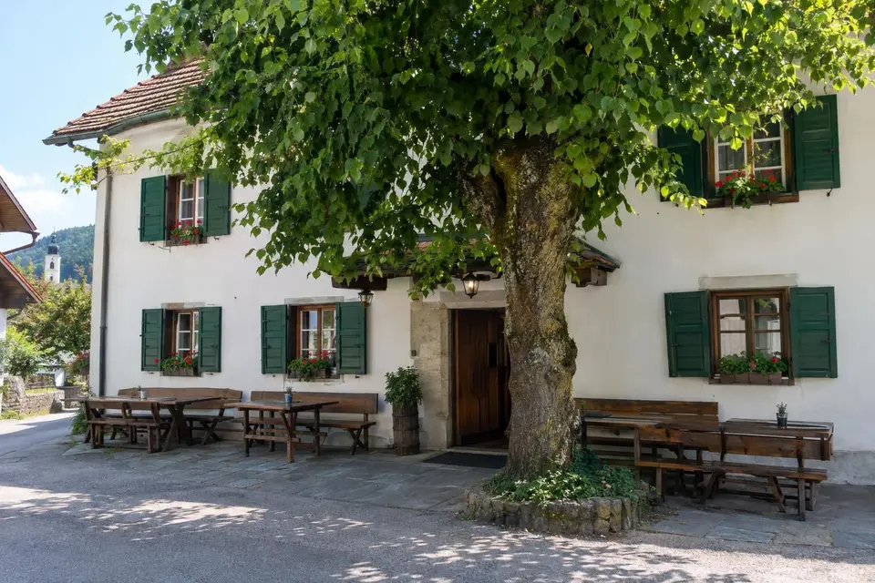
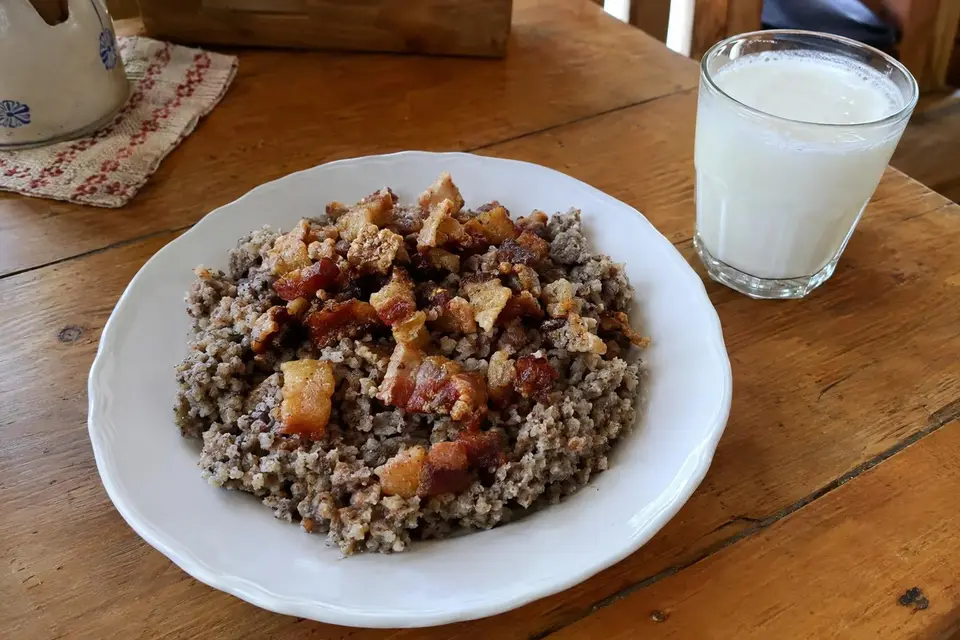
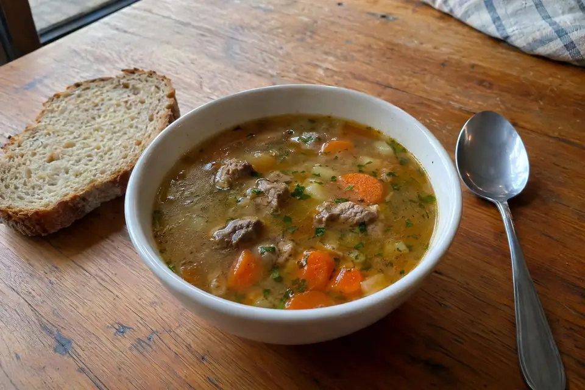
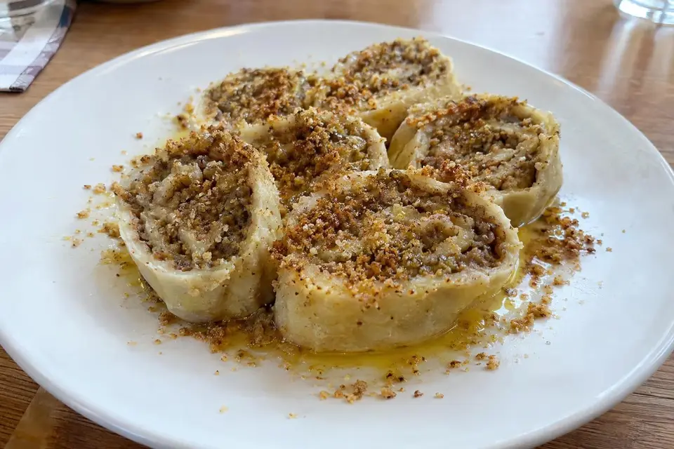
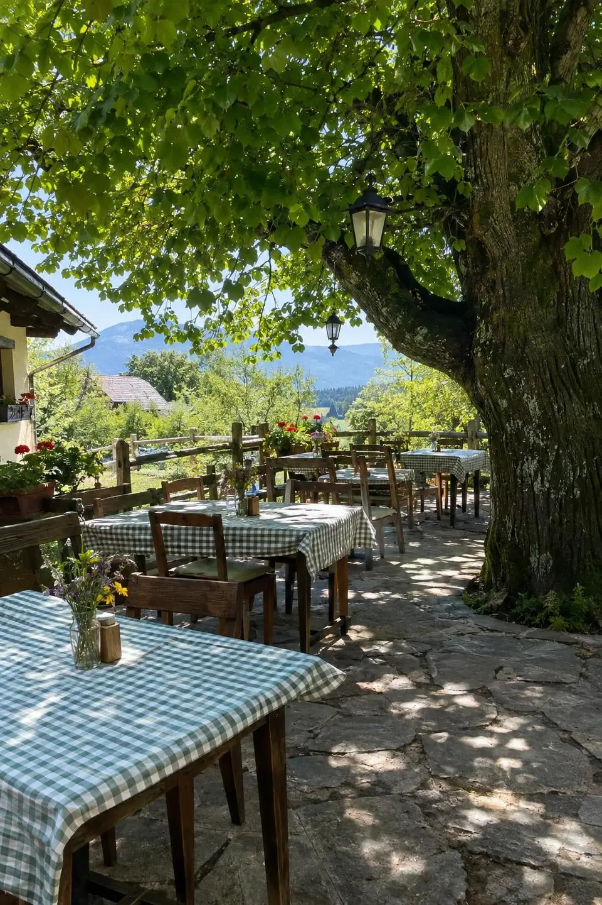
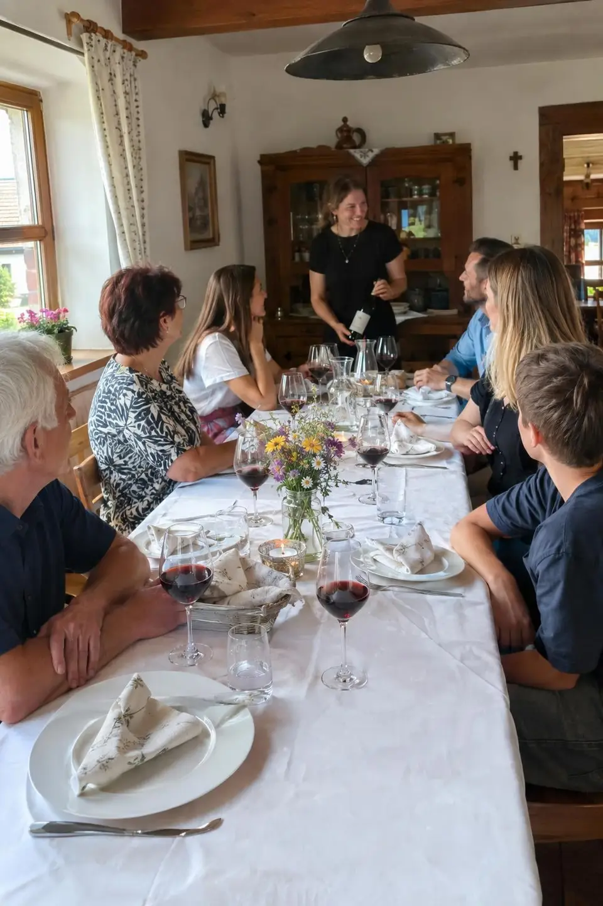
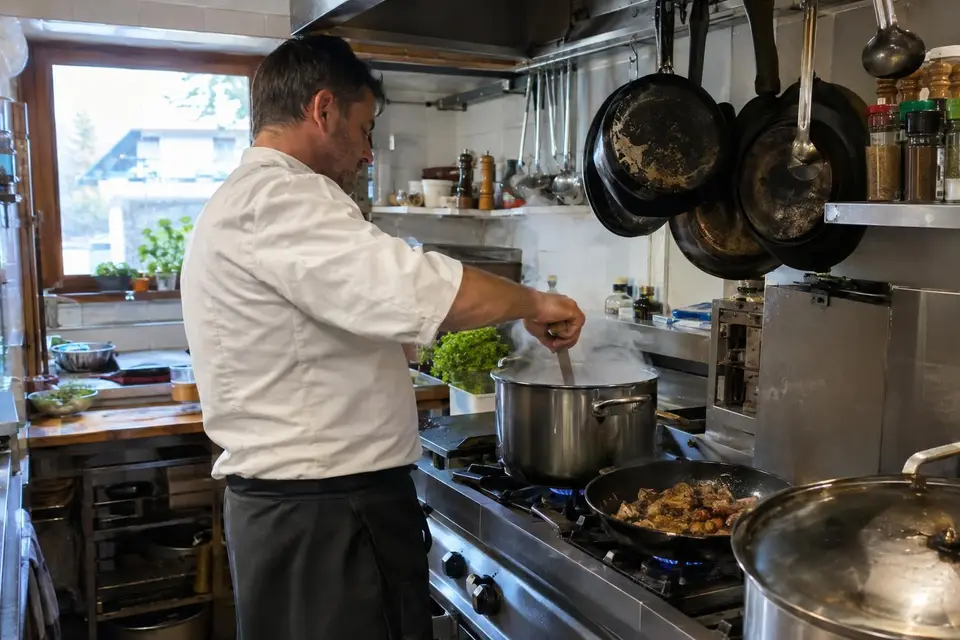

Kapucinski trg 7, Škofja Loka
Domače jedi iz sestavin lokalnih kmetov
Družinska gostilna v starem delu Škofje Loke. Vodi jo že tretja generacija družine Bizjak.
Malica in nedeljsko kosilo
Vsak dan
Dnevna malica
Juha, glavna jed, solata
11,50 €
Ob nedeljah
Nedeljsko kosilo
Štirje hodi
19 €
Z jedilnega lista
Ajdovi žganci, ričet, telečja obara, pečenke in orehovi štruklji. Kuhamo iz sestavin lokalnih kmetov.

Ajdovi žganci z ocvirki in kislim mlekom
9,80 €

Telečja obara
8,50 €

Orehovi štruklji
5,20 €
Ričet
7,50 €
Pečenke
12,90 €


40 sedežev na terasi pod lipo
Terasa je odprta poleti. Za skupine do 60 oseb sprejemamo rezervacije za praznovanja, obletnice in pogostitve po pogrebu.
Tretja generacija družine Bizjak
Marko Bizjak
glavni kuhar
Nina Bizjak
strežba in rezervacije

Rezervacije
- Naslov
- Kapucinski trg 7
4220 Škofja LokaNavodila za pot - Delovni čas
- Pon
- zaprto
- Tor–sob
- 10.00–22.00
- Ned
- 11.00–17.00